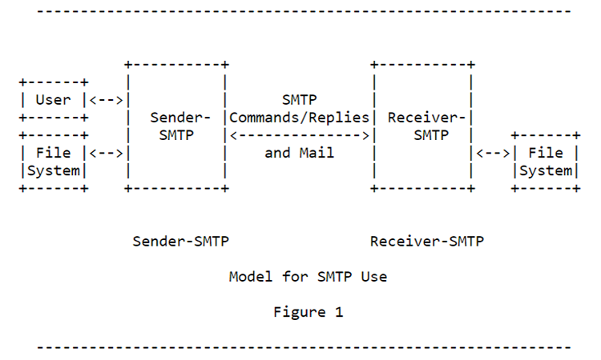

Client computers communicate with e-mail servers (SMTP servers) using the SMTP protocol. SMTP is a relatively simple, text-based protocol, that use a limited set of commands and reply codes for its communication. The SMTP protocol is defined in RFC 2821 - Simple Mail Transfer Protocol. The objective of Simple Mail Transfer Protocol is to transfer e-mail messages reliably, efficiently and easily. SMTP is independent of the particular transmission subsystem and requires only a reliable data connection.
Simple Mail Transfer Protocol (SMTP) - Architecture & Technical Specifications
Terms related to SMTP
The terms below are more commonly used today when discussing e-mail protocols, applications, and models:
Message User Agent (MUA)
A process which acts (usually on behalf of a user) to compose and submit new messages, and process delivered messages. In the split- MUA model, POP or IMAP is used to access delivered messages.
Message Transfer Agent (MTA)
A process which conforms to [SMTP-MTA], which acts as an SMTP server to accept messages from an MSA or another MTA, and either delivers them or acts as an SMTP client to relay them to another MTA.
Message Submission Agent (MSA)
A process which conforms to this specification, which acts as a submission server to accept messages from MUAs, and either delivers them or acts as an SMTP client to relay them to an MTA.
Mail Delivery Agent (MDA)
The MDA is responsible for the actual delivery of messages into a user's mail box. While this may seem like a frivolous task, the important aspect of this component is that the delivery process is separate from the very complex MTA. The main concept that the MDA defines is the structure of the mail store. Modern MDAs usually include the ability to filter mail and in some cases to reformat its contents.
Mail Access Agent (MAA)
The MAA is a new component added to the process about 15 years ago. MAAs are to a certain extent an extension of the MDA. MAAs provide remote access to a user's mail. MAAs speak one or more of a variety of Mail Access Protocols. The two most common protocols today are POP3 and IMAP4. These protocols have evolved significantly over time. The key functions of an MAA are to authenticate a user and deliver e-mail, but some MAA's provide a much more sophisticated set of features for accessing one's e-mail.
The SMTP Model
The SMTP design is based on the following model of communication:
As the result of a user mail request, the sender-SMTP establishes a two-way transmission channel to a receiver-SMTP. The receiver-SMTP may be either the ultimate destination or an intermediate. SMTP commands are generated by the sender-SMTP and sent to the receiver-SMTP. SMTP replies are sent from the receiver-SMTP to the sender-SMTP in response to the commands. Once the transmission channel is established, the SMTP-sender sends a MAIL command indicating the sender of the mail. If the SMTP-receiver can accept mail it responds with an OK reply. The SMTP-sender then sends a RCPT command identifying a recipient of the mail.
If the SMTP-receiver can accept mail for that recipient it responds with an OK reply; if not, it responds with a reply rejecting that recipient (but not the whole mail transaction). The SMTP-sender and SMTP-receiver may negotiate several recipients. When the recipients have been negotiated the SMTP-sender sends the mail data, terminating with a special sequence. If the SMTP-receiver successfully processes the mail data it responds with an OK reply. The dialog is purposely lock-step, one-at-a-time.
The SMTP Commands
The SMTP protocol consists, in its basic form, of about ten commands that is used for the communication between the client and the server. Below are some of the commands used in an SMTP communication described:
| Command | Description |
|---|---|
| HELO / EHLO | This command is used to identify the sender (client) to the SMTP server |
| MAIL FROM: | Specifies the e-mail address of the sender |
| RCPT TO | Specifies the e-mail address of the recipient |
| DATA | Starts the transfer of the actual data (body text, attachments etc) |
| RSET (RESET) | Specifies that the current mail transaction will be aborted |
| VRFY (VERIFY) | Asks the receiver to confirm that the argument identifies a user or mailbox |
| HELP | This command causes the server to send helpful information to the client |
| QUIT | Quits the session |